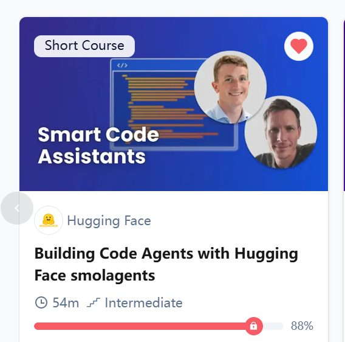

Learning Record 12
Building Code Agents with Hugging Face smolagents
网站：Building Code Agents with Hugging Face smolagents - DeepLearning.AI

感受
总体来说没有带给我太多的惊喜，最近上的课感觉都是比较无聊。
总体来说就是了解了一下Code Agent这种Agent设计范式，比较了和Tool-calling 风格Agent的区别
了解了一些关键点，比如Secure Excution，要用到sandbox，然后简单看了一下Monitoring Agent，其实还是之前了解的pheonix。
然后最后看了一下他搭的Deep-Resarch(MultiAgent System)。
此外这个课程用的是SmolaAgents，HuggingFace搭的一个开发Agent的轻量Framework，但也只是知道有这么个东西
反思
了解得这些越多，越感觉自己只是在很浅的方面学习，关于很多基本功，技术（这个很重要），还有软件工程的知识自己都很欠缺。
———————————————————————————————————
（下面这节课太好，内容太丰富，以至于我想要用更好的方式记录。感觉得找时候迭代一下自己的记录方式来，可以找一下市面上的竞品，或者让AI帮忙搭博客或者写软件）